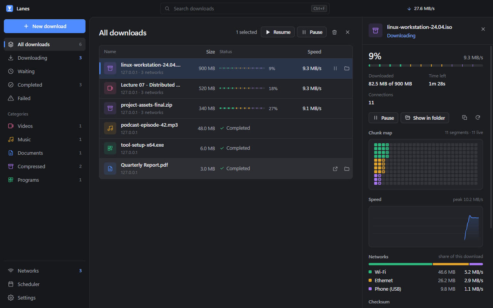
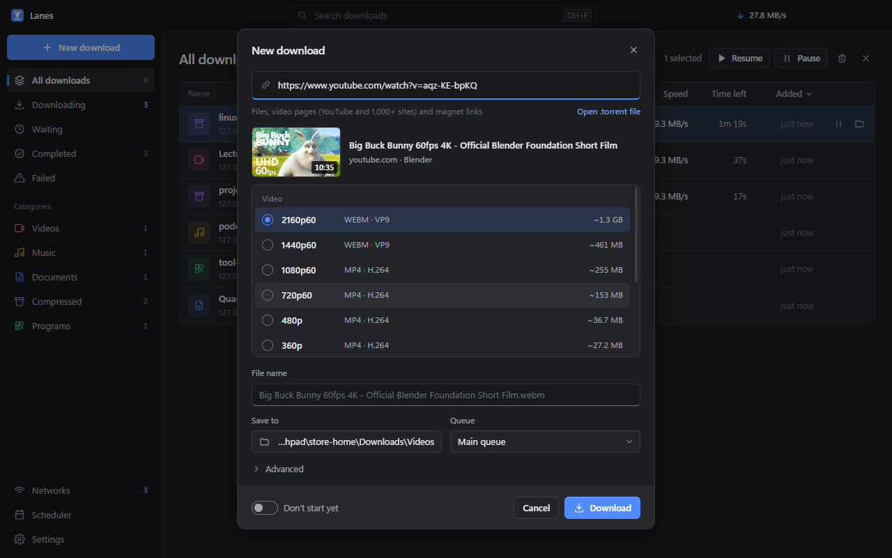
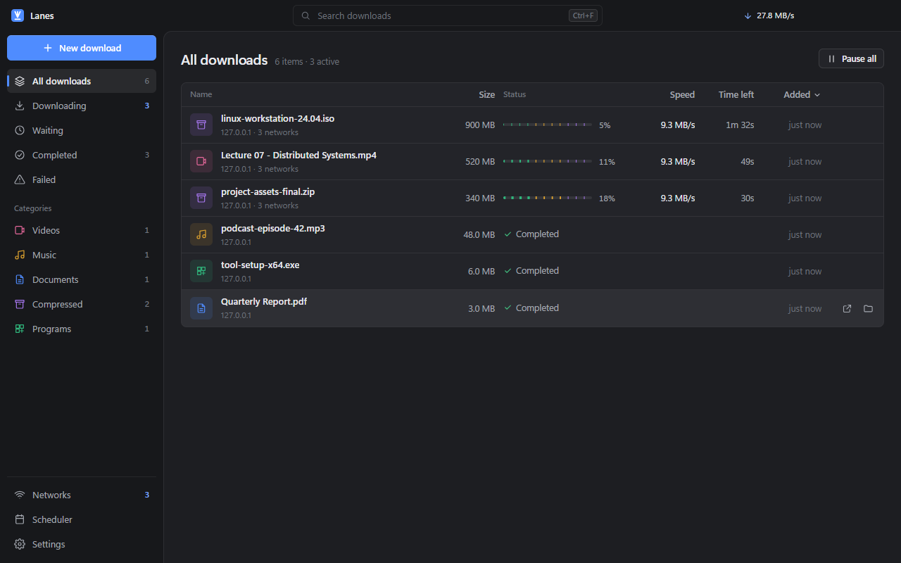

Sorted for you
Everything lands in Downloads, filed into Videos, Music, Images, Documents, Compressed, Programs and Others.
Free · open source · Windows, macOS, Linux
Lanes pulls each file over all your networks at the same time — Wi-Fi, Ethernet and your phone together — downloads videos from 1,000+ sites in the quality you choose, and catches downloads straight from your browser.

How it works
Most download managers open several connections over one network. Lanes does that on every network you have, at once.
The file is cut into pieces. Each network opens its own connections and starts on a piece.
When a connection finishes, it takes half of the biggest piece still left — so the fastest network carries the most and nothing waits at the end.
Pieces land straight in the file. Every response is checked before it's written, and resume survives crashes and restarts.
Honest note: a big speed-up needs genuinely separate internet connections — say home Wi-Fi plus your phone's data. Wi-Fi and Ethernet on the same router share one line. On a single network, Lanes still uses many connections at once.
Features
Paste a link from YouTube, Vimeo, X, Instagram, TikTok, Reddit or 1,000+ other sites. Lanes lists every quality the site offers — 4K60 down to 144p — with the file size of each, plus Audio and MP3. Nothing starts until you choose.

Everything lands in Downloads, filed into Videos, Music, Images, Documents, Compressed, Programs and Others.
Give a queue a time window — say 1 a.m. to 6 a.m. on weekdays — and let the PC sleep or shut down when it's done.
Paste the SHA-256 or MD5 from the download page and Lanes checks the file when it finishes.
Open magnet links and .torrent files in the same list, and pick up where you left off after a restart.
Pause any time. Crashes, sleep and reboots don't lose progress, and a file that changed on the server is caught.
Copy a file or video link anywhere and Lanes offers to download it. Drag links and .torrent files onto the window.
A calm, dense list with a translucent Liquid Glass theme, light and dark modes, and your choice of accent.
No ads, no tracking, no account. The extension only ever talks to Lanes on your own computer.
Name, size, status, speed and time left in clean columns. Sort by anything, filter by category or queue, search with Ctrl+F, and open the details panel for a live chunk map and speed graph.

Browser integration
The Lanes extension hands every browser download to the app and adds a Download video button on videos. Right-click any link for “Download with Lanes”, or select text to grab every link in it.
Lanes opens a short setup page the first time you start it. Downloads behind a sign-in keep working — cookies go only to the app on your computer.
Download
Free and open source under the MIT licence. Pick your system:
Lanes isn't code-signed yet, so your system asks once before opening it:
chmod +x), then run it.FAQ
Yes. Lanes is open source under the MIT licence, with no ads, no paid tier and no account.
Usually, yes. Many servers limit how fast one connection can go, and Lanes opens several. If you also have a second internet connection — like your phone's data over USB — Lanes uses both at once. Two networks behind the same router share one line, so they won't add up.
Anything yt-dlp supports — YouTube, Vimeo, X, Instagram, TikTok, Reddit, Dailymotion and over a thousand more. Some videos need you to be signed in; turn on “Use cookies from browser” in Lanes' settings for those. Only download videos you have the right to save.
Code-signing certificates cost money each year, and Lanes doesn't have one yet. The warning is about the missing signature, not about anything the app does — the source code is public on GitHub, and the installers are built there by GitHub's own machines.
Only what it needs to hand a download over: the file's address, the page it came from, and that site's cookies so signed-in downloads work. It sends them only to Lanes on your own computer (127.0.0.1). Nothing goes to us or anyone else.
Lanes is the new name of the same app. Installing Lanes replaces Prism and keeps your settings, download list and unfinished downloads. You'll be asked to add the browser extension again, once.